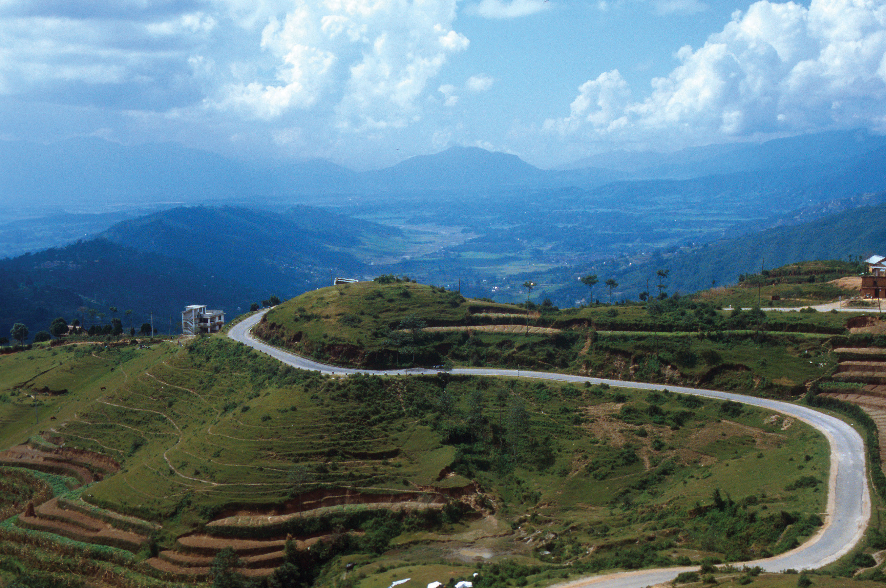
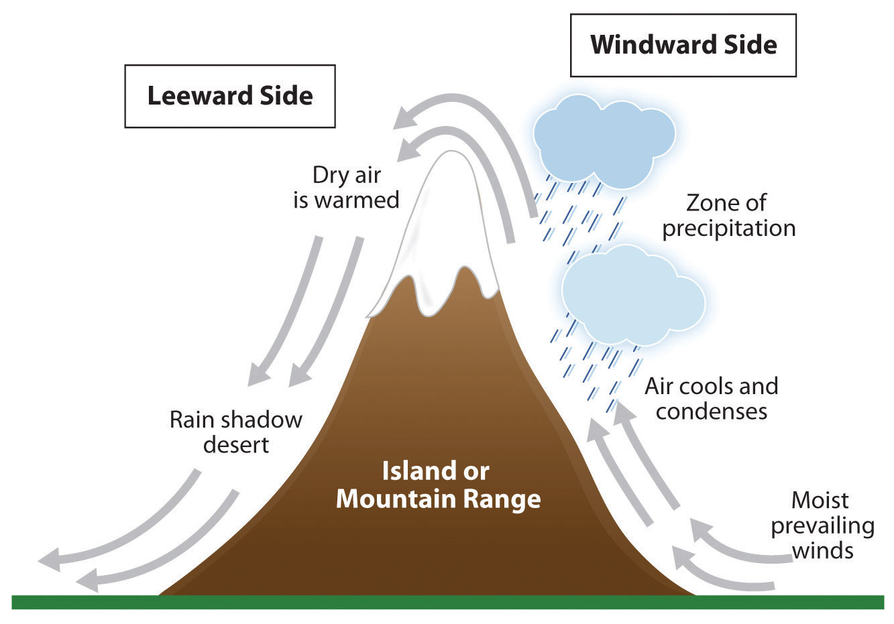
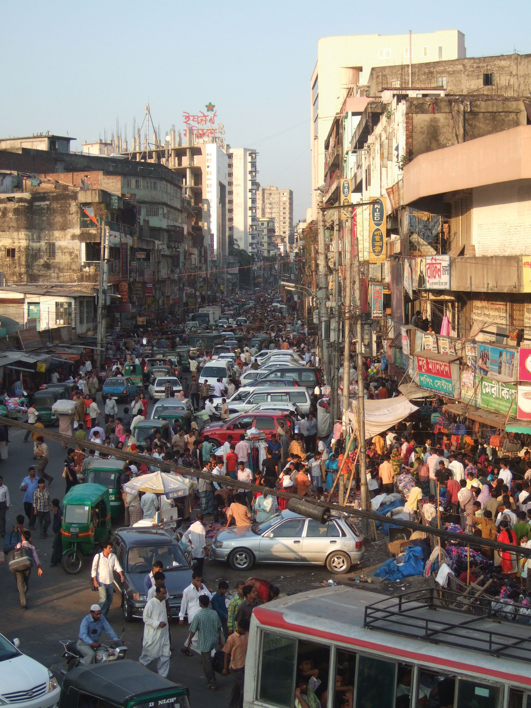
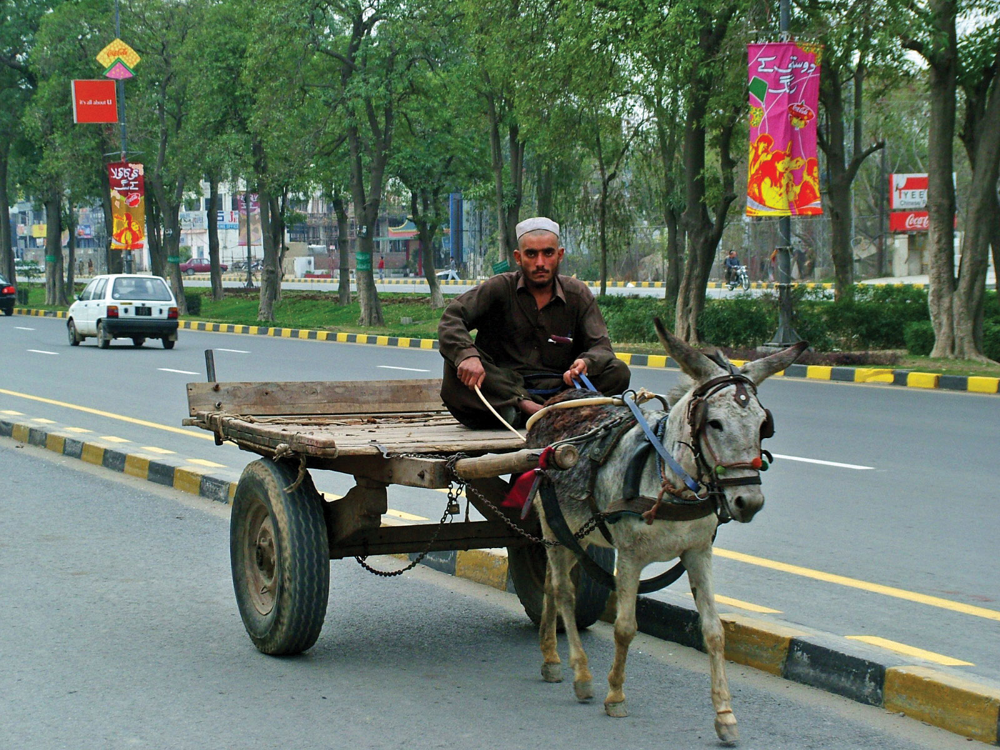

At a Glance
At a Glance
Learning Outcomes
- Describe: The monsoon winds and tectonic collision forming the Himalayas.
- Analyze: The 1947 Partition of British India and its geopolitical legacy (Kashmir).
- Explain: The economic potential of the Demographic Dividend.
- Evaluate: Vulnerability to climate change (glacial melt, sea-level rise in Maldives).
- Apply: Development concepts like Microcredit (Grameen Bank).
Key Terms
Monsoon, Partition, Demographic Dividend, Microcredit, Caste System, Buffer State, Forward Capital, Double Delta.
Stop & Check
Reveal Answer
Common Misconception
Myth: "Monsoon" just means heavy rain.
Fact: A Monsoon is a seasonal reversal of wind. The summer monsoon (wet onshore winds) brings rain; the winter monsoon (dry offshore winds) brings drought. It is a climate system, not just a storm.
Regional Snapshot: The Indian Subcontinent
South Asia is a clear example of a "physiographic region," bounded by the world's highest mountains to the north and the Indian Ocean to the south. It is one of the world's most densely populated areas, owing to the fertile river plains of the Indus, Ganges, and Brahmaputra.
Interactive Map: The Subcontinent
Explore the physical barriers of the Himalayas and the dense urban centers of the Ganges Plain. Click on major cities like Delhi, Mumbai, and Dhaka to learn about their explosive growth.
Toggle between Physical terrain and Political boundaries. Notice how the river systems define the borders and population centers.
Physical Geography: Mountains and Monsoons
South Asia's geography is dominated by the collision of tectonic plates. The Indian Plate continues to crash into the Eurasian Plate, raising the Himalayas higher each year.


The Monsoon is the lifeblood of the region. A "good" monsoon means a bountiful harvest; a "bad" monsoon can lead to drought and famine. This extreme seasonality defines the agricultural calendar and cultural festivals.
Geographic Inquiry
Bangladesh lies on the low-lying delta where the Ganges and Brahmaputra rivers meet the sea. How does this specific physical geography make it uniquely vulnerable to both monsoon flooding from the north and cyclonic storm surges from the south?
Human Geography: The Demographic Dividend
South Asia is currently experiencing a Demographic Dividend - a period where the working-age population is larger than the dependent population. This offers a massive opportunity for economic growth if jobs can be created.


However, the region also faces the legacy of Partition (1947), which divided British India into India and Pakistan, leading to one of the largest mass migrations in history and ongoing geopolitical tension over Kashmir.
The Maldives: Frontline of Climate Change
The Maldives is an archipelago of 1,200 coral islands with an average elevation of just 1.5 meters above sea level. It faces an existential threat from rising sea levels caused by global climate change.
Questions to Consider:
- Is the Maldives' situation an example of "environmental determinism"?
- How does a nation plan for its own potential physical disappearance? (e.g., buying land abroad, building artificial islands)
Big Ideas: Flip to Explore
Click on the cards below to reveal the core geographic concepts for this region.
The Monsoon
Click to flip
A seasonal wind shift that brings essential summer rains. It drives the agricultural economy but also causes devastating floods. It is the heartbeat of the region.
Partition
Click to flip
The 1947 division of British India into Hindu-majority India and Muslim-majority Pakistan. It reshaped borders, caused mass migration, and fuels modern conflict.
Demographic Dividend
Click to flip
Economic growth potential resulting from a large working-age population. South Asia must create millions of jobs to capitalize on this youth bulge.
The Kashmir Crisis: Diplomacy at the Himalayas
Kashmir is one of the world's most dangerous flashpoints, a mountainous region claimed by both India and Pakistan (and partly by China), where three nuclear-armed nations share contested borders. A recent military skirmish has escalated tensions. You are part of an emergency diplomatic team tasked with de-escalation.
🇮🇳 Role A: India
You consider Kashmir an integral part of India, enshrined in your constitution. You have the world's largest army and a growing economy. You see Pakistani support for militants as the core problem and demand it stop before any talks.
🇵🇰 Role B: Pakistan
You argue that the Muslim-majority population of Kashmir should have the right to self-determination, as promised in a 1948 UN resolution. You see Indian military presence as an occupation and demand a plebiscite.
Role C: Kashmiri Civil Society
Your people have lived under military conflict for decades. You want peace, economic development, and autonomy, but you are divided between those who want independence, those who prefer India, and those who prefer Pakistan.
Role D: UN Security Council
You are deeply concerned about nuclear escalation. You must propose a framework for dialogue that all parties can accept, knowing that both India and Pakistan have nuclear weapons and that China is watching closely.
Discussion & Reflection Prompts
Reflect on Your Learning
- The Monsoon's Double Edge: How can the same geographic phenomenon (the monsoon) be both a blessing and a curse for South Asian societies? Give specific examples from agriculture and disaster risk.
- Partition's Legacy: The 1947 Partition of British India was one of the largest forced migrations in history. How do the borders drawn at that time continue to shape conflict and identity in South Asia today?
- Demographic Dividend or Burden? South Asia has the world's largest youth population. Under what conditions does this become an economic advantage, and when does it become a source of instability?
Discuss With Your Peers
- India and Bangladesh are both downstream nations on rivers that originate in the Himalayas. How does climate change (glacial melting) threaten their water security, and what does this mean for regional cooperation?
- The caste system has been officially illegal in India since 1950, yet it persists in social practice. How do geographic factors (rural isolation, land ownership patterns) help explain why social hierarchies are so difficult to dismantle?
- Sri Lanka, despite being a small island, has achieved much higher human development indicators than its larger neighbors. What geographic and historical factors might explain this?
Data Exploration: South Asia's Population Giants
South Asia is home to nearly 2 billion people, about 25% of humanity, in a region roughly the size of the United States. The chart below compares population size and population density across South Asian nations. Consider how the monsoon climate, river systems, and agricultural potential have shaped where people concentrate.
Interpretation: Bangladesh has one of the world's highest population densities despite being a small, low-lying delta nation. How do the physical geography of the Ganges-Brahmaputra delta and the monsoon climate explain both why so many people live there, and why they face such extreme vulnerability to flooding and sea level rise?
Knowledge Check
Test your understanding of the core concepts covered in this chapter. This quiz consists of multiple-choice questions designed to review key terms, regional patterns, and geographic relationships. Select the best answer for each question to receive immediate feedback.
Loading quiz questions...
Curriculum Standards Alignment
This chapter aligns with the following National and State geography standards.